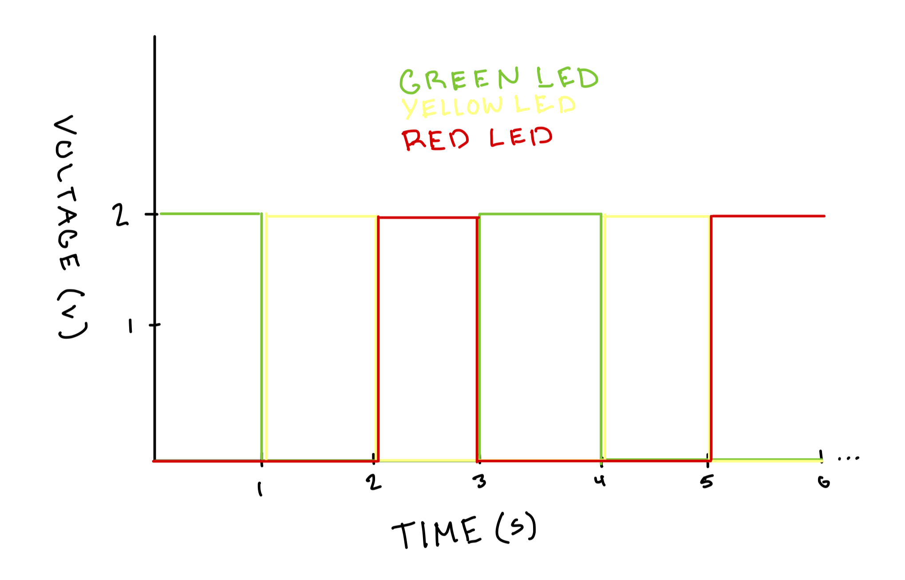

Blink! Animation

A demonstration of the LED blinking pattern.
A demonstration of the LED blinking pattern.
Wiring schematic for the LED blink circuit.

Physical circuit layout.
// pin assignments
const int greenLED = 6;
const int yellowLED = 4;
const int redLED = 2;
// Delay time (in milliseconds)
const int interval = 1000; // 1 second
void setup() {
pinMode(greenLED, OUTPUT);
pinMode(yellowLED, OUTPUT);
pinMode(redLED, OUTPUT);
}
void loop() {
// turn on green, turn off others
digitalWrite(greenLED, HIGH);
digitalWrite(yellowLED, LOW);
digitalWrite(redLED, LOW);
delay(interval);
// turn on yellow, turn off others
digitalWrite(greenLED, LOW);
digitalWrite(yellowLED, HIGH);
digitalWrite(redLED, LOW);
delay(interval);
// turn on red, turn off others
digitalWrite(greenLED, LOW);
digitalWrite(yellowLED, LOW);
digitalWrite(redLED, HIGH);
delay(interval);
}
Arduino code used to cycle the green, yellow, and red LEDs.
The voltage across each LED changes over time depending on which one is active.
Graph showing voltage across each LED over time. Each LED alternates on and off with a 1-second interval.
An Arduino Uno can control up to fourteen LEDs independently, one per I/O pin. Each LED draws about fifteen milliamps of current through its resistor, so driving all fourteen at the same time would total around two hundred ten milliamps.
Humans can only really distinguish movements up until 60 hertz. This corresponds to a blink period of roughly twenty milliseconds. When blinking faster than that, the LEDs appear continuously lit, because the switching happens too quickly for our vision to separate the individual flashes.
I used AI tools, specifically ChatGPT, for assistance with formatting this webpage clearly.